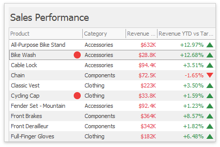

Conditional Formatting
A Grid dashboard item applies conditional formatting to data items that supply data to the dimension and measure column types.

You can use hidden measures to specify a condition used to apply formatting to visible values.
Supported Format Rules
The following list contains available format rules and corresponding data types:
- numeric
- string
- Value (with a condition type set to Equal To, Not Equal To or Text that Contains)
- Expression
- date-time
- Value
- A Date Occurring (for dimensions with a continuous date-time group interval)
- Expression
- Icon Ranges
- Color Ranges
- Gradient Ranges
- Bar
- Bar Color Ranges
- Bar Gradient Ranges
Create and Edit a Format Rule
You can create and edit format rules in the following ways:
Click the Edit Rules button on the Home ribbon tab.
Click the measure/dimension menu button in the Data Item's pane and select Add Format Rule/Edit Rules.
Refer to the following topic for information on how to create and edit format rules: Conditional Formatting Common.
Grid-Specific Format Condition Settings
Specify appearance settings and set the condition's value for the format rule. Available settings depend on the selected format rule. The image below displays the Greater Than dialog, which corresponds to the Value format condition for a Grid dashboard item. The format condition applies to the ExtendedPrice data item in the Apply to drop-down list.

The Apply to row check box allows you to specify whether to apply the formatting to the entire grid row.
You can configure and customize current format condition appearance settings.
Choose a predefined background color/font or click an empty square to add a new preset in the Appearance tab.

Add a predefined icon in the Icons tab.